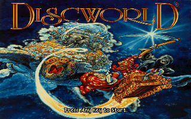
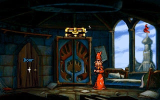

名稱：碟形世界1／阿達魔術師 (Discworld，英文版)
簡介：Teeny Weeny Games與Perfect 10 1995年共同出品的冒險解謎遊戲，由Psygnosis代理
發行 [待補]。


備註：本版為導演剪輯版（Director's Cut）
保護：磁片版無保護，光碟版為光碟
備註：遊戲必須安裝在內定目錄，否則會無法存檔。磁片版為DISCWLD，光碟版為DISCWLD.CD。
磁片版修正法：
DWB.EXE
5C 44 49 53 43 57 4C 44 5C 53 41 56 45 5C 00 72 62 00 72 62 00 5C 44 49 53 43 57 4C 44 5C
53 41 56 45 5C 00 00 00 00 00 00 00 00 00 -- -- -- -- -- -- -- 53 41 56 45 5C 00 00 00 00
53 41 56 45 5C 00 5C 44 49 53 43 57 4C 44 5C 53 41 56 45 5C 00
00 00 00 00 00 -- 53 41 56 45 5C 00 00 00 00 00 00 00 00 00 --
備註：本遊戲有1995/2/28的1.00版、1995/3/3的1.01版、1995/4/28的導演剪輯版等光碟，
1.04版日期為1995/3/24。
檔案：discwld-disk.rar = 磁片版
Patch104.rar = 光碟版1.04更新檔
discwld104.rar = 1.04光碟版
操作：
Ctrl/滑鼠右鍵 = 察看
Enter/雙擊滑鼠左鍵 = 動作
F1 = 系統選單
檔案：discwld-disk.rar = 磁片版
說明：若需要字幕，可在進入遊戲後，按F1變更。